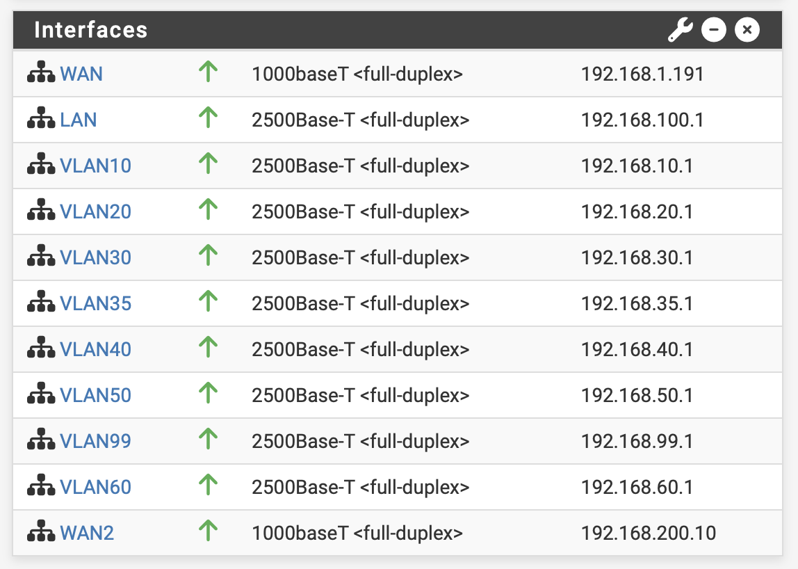

Função da firewall no laboratório
No laboratório, o pfSense funciona como ponto central entre as várias VLANs e as duas ligações WAN. A firewall controla o tráfego entre segmentos internos, aplica regras de acesso e decide por onde sai o tráfego para a internet.
Interfaces principais
- WAN: ligação principal de fibra.
- WAN2: ligação secundária LTE.
- LAN + VLANs: redes internas segmentadas por função, incluindo acesso, servidores, IoT, câmaras, impressoras e gestão.
WAN, gateway e failover: o que significam?
Ligação a uma rede externa, neste caso o acesso principal por fibra.
Segunda ligação externa, neste caso o acesso de reserva através do MikroTik LTE.
Próximo equipamento por onde o tráfego segue para outra rede.
Comutação para uma ligação alternativa quando a principal deixa de estar disponível.
O gateway group e as regras de encaminhamento permitem definir a prioridade entre ligações. As capturas mostram os estados dos gateways e das interfaces; a comutação efetiva do tráfego depende também das regras configuradas.
Estado normal
Em funcionamento normal, a ligação principal de fibra está ativa e a ligação LTE permanece disponível como alternativa. As capturas seguintes mostram os gateways online e as interfaces internas operacionais.


Quando a fibra falha
Se a ligação de fibra deixar de responder, o pfSense deteta a indisponibilidade do gateway principal e deixa de o usar para o encaminhamento de saída. A ligação LTE assume o papel de acesso à internet e permite manter a conectividade dos serviços.
Sequência do failover
- O gateway da WAN principal deixa de responder às verificações.
- O estado do gateway principal passa a pending ou offline, consoante o momento da deteção.
- O grupo de gateways ou a prioridade configurada faz a comutação para a WAN2 / LTE.
- O tráfego para a internet sai pela ligação LTE até a fibra regressar.
- Os serviços internos continuam acessíveis na rede local e os serviços que dependem da internet mantêm operação com a largura de banda disponível.
O failover garante continuidade, não igualdade de desempenho. Em LTE é normal ter menor largura de banda, maior latência e, em alguns cenários, limitações associadas ao operador móvel.


O que continua a funcionar
Quando o failover para LTE ocorre com sucesso, o objetivo é manter o laboratório operacional e evitar uma interrupção total. A continuidade é especialmente relevante para serviços que precisam de acesso à internet ou de conectividade remota.
As VLANs, a firewall e a comunicação local entre equipamentos continuam a funcionar normalmente dentro da rede.
Dashboards, atualizações, integrações externas e outros serviços continuam a ter acesso à internet através da WAN2/LTE.
O acesso remoto pode manter-se, desde que a solução usada seja compatível com a ligação LTE e com eventuais limitações do operador.